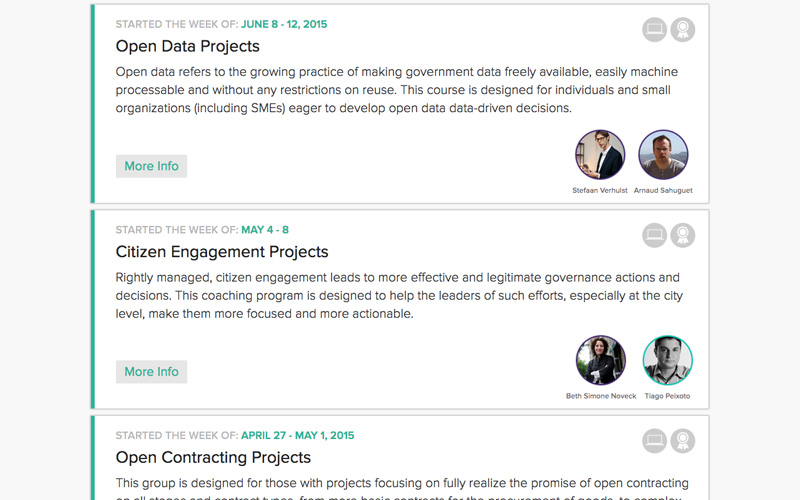
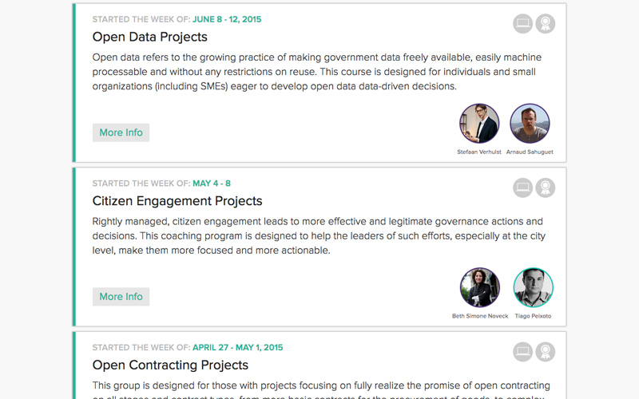

menu
Although many schools and programs teach the skills relevant to business innovation, aspiring public and social sector innovators have very few places to turn to receive the mentoring and support needed to take a technology-driven governance innovation project across a wide range of social issues from idea to implementation. Our objective has been to focus sharply on delivering learning experiences and support that make for successful governance innovation projects.
Through coaching programs, workshops, courses and project clinics, and master classes, The GovLab Academy offers teams and individuals who are passionate about solving a public problem access to high-quality, curated content aimed at busy practitioners, mentoring designed to help take public interest projects from idea to implementation, connections to subject-matter experts, and tools for peer-to-peer learning and skill sharing.
 

In a series of Masters-level courses and online (and offline) workshops and coaching programs funded by the John S. and James L. Knight Foundation, The GovLab and its network of 25 world-class coaches and over 100 mentors helped 446 participants in more than a dozen US cities and thirty countries to take a public interest technology project from idea to implementation. In the process, we’ve learned a lot about the need for new ways of training the next generation of leaders and problem solvers.
Our participants come from more than 30 different countries
Our aim has been to aid public entrepreneurs — passionate and innovative people who wish to take advantage of new technology to do good in the world. That’s why we measure success, not by the number of participants in a class, but by the projects participants create and the impact those projects have on communities.